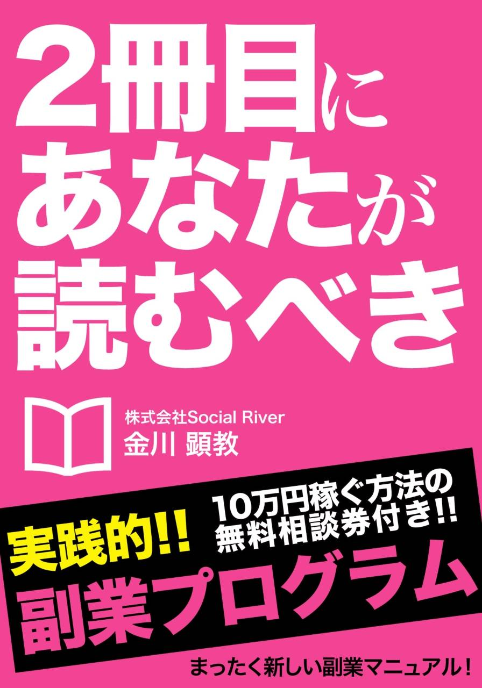

| ２冊目にあなたが読むべき副業プログラム ～主婦・サラリーマン・学生でも３ヶ月で100万を稼がすノウハウを徹底解説～ | |
| 金川顕教 | |
| (2014) | |

はじめまして。金川顕教と申します。「かながわ あきのり」と読みます。
周囲からは「アッキーさん」と呼ばれています。
まずはざっと自己紹介をさせて下さい。
三重県出身、１９８６年生まれ。今年で２８歳になります。
昨年、３年間務めた外資系監査法人を退職して起業。
現在、株式会社Social River（ソーシャル・リバー）の代表取締役です。
主な仕事は、コンサルティングを中心に、代理店業、プロデュースなど多岐に渡り、また一方で「金川塾」というビジネス塾を主宰しています。
現在の年商は４５００万円を超えています。
こんなふうに自己紹介してしまうと、
「才能があるから稼げるんだろう」とか「うらやましい身分ですね」などという冷ややかな声が聞こえて来そうです。
正直に告白します。
実は、僕はまったく勉強ができなかったんです。本当に頭はよくなかった。
それどころか、どうやって勉強していいのかさえわからなかったという有様でした。
中学１年の時、自分としては懸命に勉強したつもりでも、テストでは１１０人中９８番。
高校在学中は、プロのミュージシャンを目指し、毎日そのことばかり考えていたおかげで、まるで勉強していません。
だから、僕の高校３年の偏差値は、たったの３５。
ＡＢＣも言えない、漢字も書けないし、読めない、日本史なんかまったくわからない。
まるでゼロの状態。でも、そこから猛勉強を始めたんです。
一日２０時間は勉強しました。
とはいえ、にわか仕立ての受験勉強では大学受験に届くはずもありません。
現役受験はもちろん全滅、１浪してもまだダメ、それでもめげずに猛勉強を続けました。普通ならマイナス思考になるところだけど、そこはなぜかプラス思考で、失敗した数を数えてステップアップしていったんです。そして２浪の末、ようやく偏差値を７０にまで高め、立命館大学に入学しました。
大学在学中に、またもや一念発起して公認会計士試験を目指し、４年の夏に試験に合格。
大学４年から有限責任監査法人トーマツに勤務し始めました。
安定した職業と言われる会計監査。収入は安定していて、残業代も高く、入社１年目でもいい時の月収は５５万円ほどになりました。うまく出世していけば、２０代で１０００万円、３０代で２０００万円台も見えてくる仕事です。
でも僕は、そこに満足できなかった。
僕は、人から反対されることをやるんです。非常識なことをやる。
昔よく読んだ本にこんなことが書いてありました。
「東大に入れる人は３０００人に一人。年収２０００万円が１０００人に４人。年収３億が４０万人に１人」
数字で言われるとわかりやすいですよね。
３０００人に一人しか東大に行けない、ということは２９９９人より頑張ったら行けるということ。
つまり、常識どおりにやったら常識どおりにしかならない。年収３００万、４００万円になりたいんだったら、周りがやっていることをやればいいけれど、目標がもっと別の高さにあったら同じじゃいけないんです。
案の定、僕は会社員をしながらも、別の目標が見えて来てしまいました。
「起業したい。もっと稼ぎたい」──。
そして始めた副業。
最初の月は２万円ほど稼ぎました。ＷＥＢ系の仕事で、ちょっとしたお小遣いになりました。
それが翌月は１０万円になり、翌々月は３０万円、３ヵ月後には６０万円に達し、さらに４ヵ月後には４５７万円を稼ぎ出したのです。激務の合間に副業に精を出し、同時にビジネス書を山ほど読み、高額なセミナーにも参加しました。
目標に向かって突き進むうちに、僕はさまざまなビジネスのノウハウを身につけていました。
そして、ついに僕は会社に辞表を出したのです。
僕は、会計士としての知識に加えて、お金の稼ぎ方、ビジネスの進め方、営業、集客やマーケティング、お金の増やし方、守り方に至るまでを学んでいきました。
さらに、常にビジネス全体を俯瞰することを心がけ、「成功する人」と「成功しない人」の違いを徹底的に観察して来たのです。
結論から言いましょう。
僕はビジネスで結果を出す、ある成功の法則を見つけました。
ビジネスで結果を出すには、以下の"３つのステップ"を踏むだけなんです。
それは、
１．教育（誰からどうやって学ぶか）
２．環境（誰と一緒にいるか、誰と一緒にビジネスをするのか）
３．ビジネス（何をやるか、どうやってやるか）
この３つをおさえるだけでいいのです。
そのヒントは本書の中に詳しく書かれています。
僕は、これまでに身につけた知識とノウハウを、すべてみなさんにお伝えしようと思っています。
この本に書かれていることをきちんと実践すれば、必ずあなたは成功できますし、また、この本の特典として個別サポート相談を受けていただく事を強くオススメします。
これまでさまざまなノウハウで成功しなかった人でも、「３ヵ月で月収１００万円」は達成できるのです。
「行動」をすることで、あなたも経済的、時間的、精神的な「自由」を手にすることができます。
さあ、時間がもったいない、さっそくその「メソッド」をお伝えしていきましょう。
金川顕教
２０１０年から２０１３年の３月まで、僕は有限責任監査法人トーマツで働きました。
ここで、さまざまな大企業の仕事を見ることができたのは、とてもいい体験でした。
ところが、だんだん「自分はここにいてはいけないんじゃないか」という考えが芽生えるようになっていったんです。
人間には、３種類のタイプしかいないと言われています。
一つは、上昇志向の人。二つ目は現状維持の人。そして三つ目は、「俺はいいや。やる気ないもん」という人。
僕は「プロフェッショナル」という言葉が好きなんです。
かつては、プロのミュージシャンを目指していたこともあったし、何かしらプロ意識を持ちたかった。
２年浪人していた僕は、最初からハンディを持っていました。だから、何かのプロの仕事につきたかったんです。
そして大学時代に、「留学」「起業」「資格」の３つのうちの一つを目標にしようと思いました。そんな時に、「公認会計士」という資格が目にとまった。公認会計士というお金のプロになって、起業したいな、と思ったんです。
そして猛勉強して大学４年の夏に公認会計士試験に合格し、在学中に有限責任監査法人トーマツで働き出しました。
自分で言うのもなんですが、僕は上昇志向のあるタイプです。
ところが、入社した監査法人で働く会計士の人たちは、「現状維持の人」ばっかりだったんです。安定した職業ですからね。
大学時代は公認会計士なるのを夢見て突き進んで来たのに、いざその職業についてみたら、もうゴールにたどり着いたようなムード。とても違和感を感じてしまいました。僕は上昇志向を持っていたのに、周りの人は出世欲もあまりなく、定年まで安定した暮らしをしようという人ばかりでした。
そこが嫌だった。僕はもっと成長したかったんです。
会計士の仕事とは、数字の結果を見るのが仕事です。
その数字が合っているのかどうか、数字を見るのには優れているけれど、お金を生み出すビジネス感覚は一切ない。僕は、いろんな業種を見ているうちに「やはり起業したい」という想いが強くなっていったんです。
さらに、会社には憧れの上司という人がいない、ということも大きな理由の一つでした。もしも、僕の理想とするような魅力的な上司がいたらまだ勤めていたかもしれません。
こんなことをやってみて下さい。
真っ白な紙を横にして、真ん中に縦に一本線を引きます。
左側の上に「今」、右側に「将来」と書きます。
左側に現在の状況を書いていきます。正直に素直に。
例えば、「週５日勤務、給料３０万円......」、というふうに。
そして、右側には将来そうなって欲しい理想を書いていきます。
これは願望レベルでかまいません。
「好きな時に仕事、月収３００万円、好きな時に旅行......」というように。
まったく制限なしに、好きなように書いていくんです。
僕は、こうやって書いていってわかったんです。
会社員では、僕の理想の将来は実現不可能だということが。
今に何か不満がある人、「悩み」のある人は新しいことを始めたほうがいいんです。
「悩み」「悩む」というのは、今に満足していないということです。
だから、「悩み」が出て来たら、何か行動を起こすべきサインだと思ったほうがいい。そうなったら、何かを「絶対にやる」ほうがいいのです。
悩み続けてもいいことはまったくありません。
そして、何かを始めるならば「できている人」に聞いてみることです。
「起業」という想いが強まった僕は、会計監査の仕事の傍ら、副業を始めました。
副業には何がいいのか──。
「ホリエモンの４原則」というのを御存知でしょうか。ホリエモンこと堀江貴文さんが唱えた起業の原則ですね。
１．在庫なし
２．初期投資なし
３．利益率が高い
４．安定している
この原則から見たらどんな仕事があるのだろうか、と探してみると、出て来たのがコンサルティングとＷＥＢ系ビジネスと代理店業でした。確かに、これらの仕事にはコストはほとんどかかりません。
そこで僕は、副業として始めやすいＷＥＢ系のブログのビジネスに取り組んだのです。ブログを作って広告収入を得る、いわゆるアドセンス、またアフェリエイトというものでした。その方法をマスターして人に教えたり、セミナーをしたり、コンサルティングをしていきたいなと思い、始めてみたのです。
それが２０１２年の１１月のことでした。
やり方はすでに習得した人から教わったので、そんなに難しいものではありませんでした。これをきっかけに収入がどんどん増えていきます。その怒濤の過程は後ほどお話しします。
僕は、経済的、時間的、精神的な「自由」が欲しかったんですね。
さらに僕は、昔から人がやらないことをやりたがる習性がありました。
絶対合格できないという大学に入ったり、経済学部じゃないから無理だといわれた公認会計士の試験を受けたり、いい会社に就職したのに、それを捨てて起業したりと──。これまで反対反対の道を選んできました。
さて、僕はいろんな本を読んでさまざまな知識も学んでいきました。
「時間」について言うと、年収と時間は反比例するということを知りました。
年収が高くなればなるほど、働く時間は短くなるんですね。
有名なロバート・キヨサキ著『金持ち父さん 貧乏父さん』には、こんな事が書かれています。
金持ちになるには、オーナーになるか投資家になるしかない。
お金持ちになれないのは、会社員か個人なんです。
それはなぜなのか。
僕はよくパン屋さんに例えます。
１００円のパンを１日１００個売るパン屋さんがいたとします。
一日１万円ですから、ひと月で３０万円の売り上げになります。
パンを作る技術があって、だからパンを作って販売する。
これはまさに「個人」の考え方ですね。
一方の「会社員」というのは固定給です。
「オーナー」や「投資家」というのは、まず時給や固定給ではない。それは「成果」なんですね。
「個人」のパン職人は、一人で１店舗しかないわけですが、「オーナー」はその職人を５人育てて雇うことができるわけです。すると自分も含めると、６人分、つまり１８０万円の売り上げになる。
さらに、勝手に店舗が育つように、パンを作る技術をマニュアルにして仕組みを作り、どんどん店舗数を増やしていけば、６０店舗になったら１８００万円になります。これが「オーナー」の発想なのです。
人や設備などが自動で回るようにする。
すると、「オーナー」に６０人の「成果」が入ってくる。
そうすれば「雇用」も生み出すことができるんです。
「個人」や「会社員」は、一冊の本を読み終えたら、おそらく本棚にしまっておしまいです。１年も経ったら、その内容はおろかタイトルさえ思い出さないでしょう。
ところが、「オーナー」の場合は、読んだ本の内容を６０人に教えていく。そして、組織としての結果をあげていくんです。
よく、会社の社長やオーナーは、朝礼などで様々な話をしたがるのはそのためなんです。
自分だけの知識ではなく、みんなのものにシェアすることで、同じ方向に向き合うことができる。
もし、会社員であっても、自分の得たものを部下や組織に伝えるようにすることで、みんなの意識はあがっていくものです。会社員でも、この「オーナー思考」というのは大切なんですね。
「育てる」「教育」「みんなで」というのは「オーナー思考」の原点なんです。
◎２０１２年１１月／２万円 １２月／１０万円
前に述べたように、会社員時代、僕が始めた副業はアドセンスというものでした。これは、自分でブログを作ってそこに商品の広告リンクを貼り、ブログの訪問者がそのリンクをクリックすると、２０円～４０円の報酬が支払われるという仕組み。ブログは無料で作成できるから誰でも手軽に始められるビジネスです。
僕は、ネット上で販売されているマニュアルを購入し、取り組んでみました。
ブログの記事は、芸能ネタなどで、最初は自分で書いていましたが、すぐに１本１００円くらいで外注するようになりました。
頑張って毎日新しい記事を作っていくと月２万円くらいにはなりました。
その翌月には、１０万円に。
ここで、僕はＳＮＳの利用するようになっていきます。Ｔｗｉｔｔｅｒを利用してブログへ誘導、さらに自分が習得したアフェリエイトの手法を人に教える練習も始めます。
毎朝、５０００円とか１万円の振り込みがあるのは嬉しかったですね。
会社でも気になって、ついトイレでスマホから銀行残高を見たりしてました。
◎２０１３年１月／３０万円 ２月６０万円
３ヵ月目には、Ｆａｃｅｂｏｏｋなどで知りあった人にアフェリエイトのやり方を教えるようになっていました。もちろんお金はもらいません。タダでどんどん教えて、「もっと知りたい」という人には、僕が使った教材を薦めました。
実はこれは「代理店業」なんですね。
教材は、１本１万６８００円でした。これを僕経由で販売すると、僕には１本売るごとに１万２０００円の報酬が支払われるんです。
これはよくある手法で、メルマガなどを使って大量に販売して大きなビジネスにしている人もいます。でも、僕はその方法はとらずに、直接会って売りました。後ほど詳しく説明しますが、メルマガなどを使って不特定多数に販売するほうが多く売れるように思われがちですが、本当は一対一で売ったほうが確実に成約率は高くなるんです。
僕はそうやって３０本を売り、報酬は３６万円になりました。
もう、アフェリエイトのビジネスではなく、アフェリエイトのコンサルをビジネスにしていったのです。
タダで教える、それも全力で教えると、相手は「もっと知りたい、指導料を払うからもっと教えて下さい」と言ってくるようになります。
そこで、僕は２０万円の自分の商品を作って１１本売り、また同時に３０万円の他人の商品（代理手数料１０万円）を２０本売って、月に４００万円を稼ぐようになっていったのです。
サラリーマンが、副業で稼いでいる額と割合を表す数字があります。
「５％
と９５％
」──
これは、副業で月に５０００円以上稼げている人が５％
。残りの９５％
は５０００円以下なんです。５０００円以上が１００人中、たったの５人しかいない。
サラリーマンの人のひと月のお小遣いの平均は２万円だそうです。
結婚して子供がいたりすると、アルバイトしている高校生よりも小遣いは少ないんですね。
そういう人にとって、５０００円入るというのは凄いことなんです。
だから、もしもあなたがセミナーなどで３０人すべての人に、毎月５０００円確実に稼げる方法を教えられたら、それはかなり凄いことに違いない。
僕がやったのは、まず自分で作業して５０００円稼ぎました。そして、すぐやめて「教える」側に回ったんです。
１００人中、９５人の人たちは「悩み」を抱えています。
それは、「自分も月に５０００円以上稼ぎたい」という「悩み」です。
僕は、その９５人の人たちに稼ぎ方を教えました。それも無料で。
この無料、というのも大きなポイントだったんです。
「はじめに」で、３つのステップについて触れました。
ビジネスで結果を出すためにステップ。
それは、「１．教育 ２．環境 ３．ビジネス」でした。
この「１．教育」──誰からどうやって学ぶか、というのが最初のステップです。
この答えは簡単なことです。
答えは「成功している人」です。
僕が最初に始めたアドセンス、アフィリエイト・ビジネスでも、僕はもっとも稼いでいる人をリサーチしてその人から教材を購入し、学んでいきました。セミナーにもどんどん参加して、徹底的にそのやり方を身につけたんです。
もし、あなたが東大に合格したい、と思ったらどうしますか？
「どうすれば東大に合格できますか？」という質問を投げかける最適な人は、「東大に合格した人」に決まっています。
実際に東大に合格した人３０人に聞けば、どうやれば合格できるか、という方法論がきっと見つかるでしょう。それもそれくらい多く聞けば、彼らはある「同じこと」をしていることにも気づくはずです。
ダイエットでも同じです。
「１ヶ月で１０キロ痩せたい」と思ったら、実際に１ヶ月で１０キロ痩せた人３０人にそのやり方を聞けばいい。世の中には必ずやり遂げた人がいます。探せば絶対にいます。その人に聞きにいく。それが最高の学び方と言えるでしょう。
「はじめに」に書いた３つのスップのうちの「３．ビジネス」──何をやるか、どうやってやるか、それをここで解説していきましょう。
「ビジネスとは何か」──。
極論で言えば、ビジネスとは「悩み」を解決する手段です。
例えば、喉が渇いたら飲み物を買います。お腹がすいたら何かを食べるでしょう。何か情報を知りたいなら本を買ったりしますね。
これらのことがすべて「ビジネス」につながります。
それらの「悩み」を解決できるという人は、「商品」を持っています。
例えば「本」。ある人が「営業」のテクニックを知りたくてある本を買ったとします。この人は「営業を知りたい」という「悩み」があったわけなんですね。
健康、時間、精神、将来、恋愛、結婚、運動、美容ダイエット、音楽......。収入を増やしたい、自由な時間が欲しい──さまざまな悩みがあります。その分だけ悩みを解決するビジネスはあるんです。
また「めんどくさい」というのもビジネスになります。家の掃除がめんどくさい、とか買い物がめんどくさい、というようなことですね。そこに「お掃除代行サービス」「買い物代行サービス」などが必要とされてくるわけです。
さてここで、みなさんに一つ質問があります。
みなさんの中で、税金について詳しく知りたいと思う人はどれくらいいるでしょうか。
知りたいと思っている人は少なくないはずです。
では、税金について詳しく知っているから人に教えてあげたい、という人はどれくらいいるでしょう？ ほとんどいませんよね。
僕は、会計士でしたから財務や税金についてはとてもよく知っています。
だから、人に教えることができるんです。
実は、ここにビジネスチャンスがあるんです。
「みんなが学んでない分野だけど、とても需要があるもの」──。
誰もがやっているものではなくて、誰もやっていないもの、というのは実は意外に多いんです。そして実は、考えるほどそんなに難しいものでもない。
例えば本屋に行って、１０００円で税金の本を買って来て熟読し内容を把握して、３０人の人の前で話すとします。
「誰でもわかる税金セミナー」
これを参加費１０００円でやったら、けっこう人は来るでしょう。また、僕が「人前で話すスキルを学ぶセミナー」も１０００円でやったら、来てみたいと思う人もけっこういるはずです。３０人集めたら、それだけで３万円になります。
しかし、それよりもっといい方法があります。
１０００円で本を買って勉強し、タダで教えるんです。それも３時間、全力で。
そして、もっと詳しく知りたい人は３０００円のセミナーに参加して下さい、といえばいい。あなたの３時間の説明に３０００円以上の価値を感じたら、参加者は絶対ついて来ます。これは、料理でも、法律でも、また「人前で話す方法」でもいいんです。
とにかく「教える」ということなんです。
まずは「ありがとう」と言われるようなことをやりましょう。
例えば、会計士試験に受かりたい、そして会計事務所を設立したい、Ａさんという人がいたとします。
僕は会計士の資格を持っていますから、この人に会計士試験に関する情報を与えられるわけです。それも３時間みっちりと。
そこでお金が発生するかどうかはまだわかりません。ただ、教えてもらったＡさんは「ありがとう」とは言ってくれるでしょう。
さらに５時間教えたとします。そしたら、Ａさんはだんだん合格できるような気になって来た。それからは、試験を見据えた勉強が必要になって来ます。本気でチャレンジしたいと決意の言葉も出て来ました。
そこで、受験の専門学校を紹介してあげます。
そしてＡさんは「金川さんから紹介されました」と言って入学します。
２年間で５０万円の授業料を払い込みます。
この総額の２０％
の１０万円が紹介手数料として僕に払われます。
これが代理店業なんですね。
弁護士、司法書士、会計士、などの「士」がつく職業の人同士は、お互い紹介し合って、その報酬を支払っています。
「悩み」を解決する手段は、自分の持っているスキルじゃなくても、他人のものでもかまわないんですね。
また、ツールや本、セミナーでも何でもいいんです。
では、一番やりやすいビジネスは、いったい何でしょうか。
それは「インフォメーション・ビジネス」です。
これは単純に言って「教育」「教える」「講師」ということ。
わかりやすい例を挙げてみましょう。
人を笑わせたいのに笑わせられない、そういうスキルがない人がいたとします。
お笑いは好きなんだけど、そういうネタを持ってないうえに、話すのも上手くない。
「笑い」のスキルが欲しい、という「悩み」を持っているわけですね。
そこで僕が、「絶対すべらない話」を彼に１個プレゼントしたとします。
その「絶対すべらない話」を忘年会で披露すると、これがバカウケ。そして僕は彼から「ありがとう」と言われます。
この「ありがとう」の延長線上にお金が入ってくる、ということがあり得るんですね。
例えば僕が、同じような「絶対すべらない話」を１００個持っていて、それを１０００円で販売したとします。それが売れていけば、これは「インフォメーション・ビジネス」というものになるんです。
これは、英会話とか料理教室などでも同じですね。本も、セミナーもそう。ｉＴｕｎｅもそうですね。情報を売買するわけですから。
このインフォメーション・ビジネスがいいのは、まさにホリエモンの４原則だからなんです。「在庫なし・初期投資なし・利益率が高い・安定している」
実は、弁護士も会計士も税理士も同じなんですね。訴訟したい、税金についてよくわからない、と言って相談して相談料を払いますね。彼らは、資格を持ったインフォメーション・ビジネスマンなんです。
僕がやろうとしたプランには、毎日一冊本を読んで、その解説を月額課金制でひと月１０００円くらいで販売する、というものもありました。そんなものでビジネスになるの？ これがなるんです。
例えば、ホリエモンは月額１０００円のメルマガを売っています。その読者が１万人いるから、それだけで年収１億円になるわけですね。
まずは「ありがとう集め」をする。
そのためには、まず自分が成長しないといけません。
この「成長」の先に「お金」があるんです。
何もない人にはお金は支払われません。
人の「悩み」があったら、そのために、まずは何かを仕入れることも必要です。
手段がなければ、仕入れればいい。
僕もリサーチして、仕入れまくりました。
これまでに軽く１千万円以上使っているでしょう。
そのために、本を買って読みまくり、セミナーも死ぬほど行きました。２日で１０万円というセミナーも行きました。
情報や知識を仕入れる方法で一番いいのは、「対面」です。
その次に「対話」、そして「音声」、最後が「文章」です。
音楽で言うと、「対面」は「生ライブ」で、「対話」はＤＶＤ、「音声」はＣＤ、そして「文章」は「歌詞」になるでしょう。
生で聴くのが一番いいのがわかってもらえると思います。
ビジネスで言うと、「対面」は「コンサル」「セミナー」「塾」で、「動画」は「ｓｋｙｐｅ」や「Ｙｏｕｔｕｂｅ」、「音声」は「電話」か「ＬＩＮＥ」、そして「文章」は「本」または「ＰＤＦ」などですね。
初心者の場合は、とにかく「対面」がベストなんです。
この「対面」でもランクがあります。
まず「一対一」、「一対二」、そして「一対Ｎ」、生ライブよりもカラオケＢＯＸで、一対一で生の歌声を聴けるのは最高ですよね。「次、何聴きたい？」なんて言われてリクエストするなんて感動ものですよね。
ところが実際は、みんなもっとも伝わりにくいはずの「文章」から入るんです。
わかりやすい例が英語。
英語の「対面」は、外国人と直接話す、もっとも身につくやり方です。
でも、ほとんどの人は教材から入る。だから結果が出てこない。
その理由は、安いし、手軽だからなんです。結果が出てこなくても、たいした投資じゃなかったからとあっさりとあきらめてしまう。
はっきり言って、高くて手軽じゃないほうが結果が出ます。
「音声」「文章」は、インプットで終わってしまいます。
最高のインプットは、「人に教える」、つまりアウトプットするということなんです。それが一番、頭に入る。本を読むにしても、１回読んだらその内容を５人の人に教える、という作業をしてみる。すると、自分の中にものすごく内容が入ります。試しにやってみて下さい。
テレビを観て面白かったら、その内容を面白く人に伝えて下さい。
『金持ち父さん』の本にもありますが、人に伝えるということは人を育てられるということなんです。
例えば、１年間、１日１冊の本を読んで、３６５人の人に教えていたら、きっと仕事があなたに舞い降りてきます。
脳は意外にシンプルなんです。１年前に読んだ本って覚えていないことが多いですよね。インプットしただけだと消えてしまうからなんです。
だから、アウトプットすることはとても重要なんですね。
インプットしたら、すぐに「対話」によってアウトプットする。
それが確実に脳に残るスキルになっていくんです。
僕は本を読んだり、セミナーに聞きに行ったりするとき、自分のためにではなく「人に教えるために」と考えます。
誰かに伝えてあげよう、教えてあげようとして聞くと、ものすごく「発信ベース」になる。それがかえって「学び」になるんです。
さらに、ここで人に上手に話をするワンポイント・アドバイスを。
それは、「例えば」と「なぜ」を使う事。
この２つを使えば、話が格段に巧くなります。
ほとんどの人は具体例がないんです。だから話が伝わらないんですね。
例えば「僕は会計士で会計監査をしている」──。それだけじゃよくわからないですね。そこに「例えば」と仕事の例をあげたり、「なぜ」仕事をしているのか具体的な説明していくだけで興味を引く効果があります。
この二つがあれば、出世にも影響あるだろうし、子供の教育、また旅行に行った話を伝えるにしても面白さと臨場感がまったく違って来ます。
先日、僕はあるセミナーに参加して来ました。
講師は、年収１億円の方で、これまでに４万６０００人に直接ビジネスの指導をして来たというすごい人でした。
その人は、年収が決まるのは心理学が８０％
だと言いました。
一度でも月に１００万円を稼いだことのある人なら、新しい分野でもまた１００万円稼ぐことは可能だと言います。
脳が覚えているんですね。
だから、思考が行動を生み出します。
それが習慣となっていくと実績、つまり結果を生み出します。
だからスタートの「思考」がとても大事なんです。
「思考」「行動」「習慣」「結果・実績」──
この積み重ねが成功への道へと導いていくのです。
そのためには、何ごともまず「簡単にできる」と思うことが必要です。
「難しいからできないかもしれない」と思ったら、まず確実にできません。
英語にしても、難しそうだと思ったらとてもマスターできないし、料理は難しそうだと思ったら、何一つ料理できないでしょう。
セミナー講師として、人前で話すことにしてもそうです。
僕にしても、昨年の８月からセミナーをやり始めたんですが、実はそもそも人前で話すのは苦手だったんです。でも、「簡単だ」と思ってやり始めたら、できるようになりました。
『思考は現実化する』という本があります。
これは、「思っていることは現実になる」という内容です。「難しい」と思ったら、可能だったはずでも不可能になってしまうんですね。
実際のところ、月１００万円は簡単なんです。
年収一千万円が達成できないならば、どこかで難しいと思っているか、思考、行動、習慣のどこかに問題があるんです。
年収２０００万円以上の人は、人口の２％
だと言われています。
「２％
か。それは厳しいな」と思ったあなたは、そこに到達するのは難しいでしょう。思考が「難しい」と思ったら難しいんです。
ここで、１００人中、２人しかいないと思ったらダメで、９８人があきらめてしまうことをやればいいんだ、と考えるべきなんですね。
僕は常々、「僕の言っていることは、すべてパクってもらってかまいません」とみなさんに伝えています。セミナーでも塾生のみんなにもそう言っています。
この「パクる」ということはとても重要なことなんです。
同じ「思考」で同じ「行動」で同じ「習慣」になれば、同じ「結果」になります。最初はオリジナリティを出すのは難しい。特に月１００万円を達成するまでは、とにかく「パクる」というやり方が大切なんです。
赤坂に有名な中華料理店の『赤坂離宮』があります。あそこのチャーハンは究極のチャーハンと言われています。あのチャーハンと同じ味を作れると思いますか？
普通、作れないと思うでしょう。でも、作れるんです。
『赤坂離宮』のチャーハンを独学で作ろうと思ったら不可能でしょう。
でも、料理にはレシピがあります。
そのレシピに忠実に、ちゃんと「パクれ」ば同じチャーハンができるんです。
まあ、中華鍋の振り方などの技術の問題は残るんですけどね。
僕は、自分のビジネスのノウハウをＰＤＦにして、時間にして３６時間、全部で７８本の動画を無料で配布しています。
そして、それを３度見てその感想を書くこと、さらに人に内容を説明することを薦めています。
前に述べたように、究極のインプットは、アウトプットする事にあります。
だから、僕のやり方を完全にパクってもらえれば、間違いなく月１００万円は現実のものになるんです。
ここからは、具体的に「月１００万円を稼ぐ」方法論について考えていきましょう。
「月１００万円」と言われてもすぐにはピンと来ないかもしれません。
では、頭の中で「月１００万円」を分解してみましょう。
これは算数です。
単価×数量ですね。
１００万円を稼ぐということは、
１万円×１００個
５万円×２０個
１０万円×１０個
２５万円×４個
５０万円×２個
１００万円×１個
１万円の商品なら例えばゲーム。１万円のゲームを１００個売れば１００万円になります。５万円のものといえば、ｉＰａｄですね。これを２０個売る。
１００万円なら車を１台売る。
１万円と１００万円、どっちが簡単だと思いますか？
１万円のゲームを１００個売るほうが簡単なんでしょうか。
ここで重要なことは、１万円のものを１００個売るのと１００万円のものを１個売るのとは１００倍の差があります。では、労力も１００倍かというとそうではない。１００倍時間がかかるわけでもありません。
僕は、できるだけ単価を上げていったほうがいいと薦めています。
最低でも１０万円のものを１０個売ることを選ぶ。１０万円のものを３日に１個売る。それで、月に１００万円の収入になります。
月１００万円で年収にすれば１２００万円──。総額だとちょっと想像がつきにくいけれど、３日に１個１０万円のものを売ると考えるとぐっと身近になるはずです。
では、１０万円のものを１０個売るというのはどういうことか、さらに分解してみましょう。
今度は日数で割ってみましょう。
売るものが１年間のサービスだとすると、月で割るとひと月８０００円くらいです。さらに３０日で割ると、１日２６０円になります。そう考えると、商品としてそう高いものではないように思えてくるでしょう。
ビジネスを行うには、次の３つの力が必要とされます。
１．商品力
２．集客力
３．営業力
「商品力」。
例えばコンビニには、自社商品か他社商品を販売しています。
これからビジネスを始めようと思う人は、自分で何か商品を作らなきゃいけないと思い込んでいる場合があります。でも、そんなことはない。人の商品でもまったく構わないんです。僕が売っているものでも人のものがたくさんあります。不動産にしても保険にしても、携帯電話にしてもいっぱいあります。
全部自分でやらなきゃと思わなくてもいいんです。
車を作る過程を想像してみて下さい。
自社ですべてのパーツを作っているか、というとそんなことはありませんね。
だから「分業」が重要になって来るんです。
これは、「集客力」「営業力」でも同じことです。
すごく重要なことは「協力する」ということ。
僕がセミナーをする場合でも、多くの人に手伝ってもらってるからできるんです。金川塾の塾生がセミナーをやる時は、僕も全面的に協力しますし、塾生同士もそういう体勢を常に心がけています。
何でもそうなんですね。何万人ものファンを抱える芸能人のファンクラブにしても、実はファンの子たちがたくさん勧誘するからあれだけの数になるんです。
ポイントは「口コミ」。これが一番強い。
普段の生活でも、友達が「ｉＰｈｏｎｅいいよ」って言うから買った、ということが多くないでしょうか。Ａｐｐｌｅのショップ行って、自分で調べてというより、口コミで買ってしまうことがとても多い。
口コミをあげるためには、商品の価値をあげる必要があります。
これは、売る値段を上げるということではなくて、顧客満足度の単価をあげるということなんです。
ホントに買って良かったな、という納得の金額ですね。
人の商品にしても、そうやって満足してもらうことが基本なんです。
あとは、何個売ったかということですね。
僕がセミナーを開催する場合の集客は、原則的には実際に「対面・対話」して直接声をかけるようにしています。前にも述べたようにそれがもっとも効果があるからです。でも、それだと限界がありますから、自分だけではなく、人に頼んで集めてもらいます。それなりに一人集めたら２０００円、１０人以上なら一人３０００円、というようにお金を支払って集めてもらうのです。
僕が最初にやったのが「Ｇｏｏｇｌｅアドセンス」とアフィリエイトで、次に「自己アフィリエイト」に移行していきました。これらは、まったく資金がなくても始められるビジネスです。そして、簡単にお金が稼げるんです。
「人が集まるところにはお金が集まる」という言葉がそのまま当てはまるようなものです。
金額はさほど大きくなくても、長期プランで、誰でもお金が手に入れられるような仕組みになっています。
まず、この方法をマスターして、それをタダで教えて下さい。
そして「ありがとう」と言ってもらってください。
「ありがとう」と言ってもらえたら、価値を認めてもらったことになります。
この自己アフィリエイトで３万円くらいはラクに稼げます。
すると、次にすることは「教える」。
教えまくって下さい。
「量からしか質は生まれない」という名言があります──。
とにかく数をこなすことが大切なんです。
教えれば教えるほど教え方はうまくなっていきます。
最初は上手くいかないかもしれません。
用心深い相手なら、もしかしたら「怪しいな」と思われるかもしれません。でも心配無用。まったくデミリットはありませんから、感謝されることはあってもうらまれることはない。
この仕組みがちゃんと人に説明できるように、さらに面白く伝えられるようになったらあなたには「人に教えられるスキル」が身についたことになります。
３万円を一人の人に教えたとしたら、３万円×１ですね。でも、１００人に教えたとしたら、３万円×１００で３００万円になる。この金額をあなたは無料で提供してあげたことになるんです。
「教える」スキルは、話せば話すほど上達していきます。
だから、「お金」を稼ぐというより自分が「成長」できると考えて下さい。
僕にしても、最初からこんなふうに仕組みを解説できたわけでありません。去年、動画を４７０本も撮って話す練習をしたんです。３ヵ月である程度のレベルまでは行けるようですね。それでも、「スピーカー」としてはまだまだです。
ゼロから「１万円」が大事です。最初の一歩を踏み出すのがもっとも重要です。
続いて、「１万円」から「１００万円」。これは意外にも簡単なんです。
自分でやってみて、人にちゃんと教えることができて「ありがとう」と言ってもらえれば、あとは量の問題です。
月収で見ると、あなたの相手が自己アフィリエイトで稼いだ金額は、３万円×１ですね。これをタダで稼いだわけです。
タダで教えてもらって３～５万円を稼ぐことのできた人は、３万円くらいのモノは買ってくれます。
そんな３万円くらいの商品を作って、２回ほど売り、さらに相手が稼ぐことができれば、１０万円の商品も余裕で買ってくれます。
そしてこれだけは守ってください。
もしも、相手が商品に納得してくれなかったなら、全額返金してもらうようにするのです。
お金は稼げなくても、教えたスキルはあなたに残ります。
潔く「全額返金」を謳ってください。
また、自分を「初心者」ということは絶対禁句です。
初心者からは誰も買いませんから。そこは気をつけましょう。
売るもの、商品は決めておいてから始めましょう。
そして、相手から「ありがとう」と言われるように、５日間タダで全力で教えるのです。
そしたら、絶対もっと教えて下さい、と言って来ます。
これで３ヵ月が勝負です。無料でも本気で３ヵ月やって１００万円いかないことはありません。本気でやったならばですよ。
すごく大事なのが「本業」だと思ってやること。
あなたが会社員だとしても、ビジネスをやって月１００万円を目標にするなら、こちらを「本業」だと思わないといけない。
本気で目指すなら、会社員の仕事を「バイト」と呼んで下さい。
面白いことに、そうやって「バイト」と呼ぶようになると収入上がるんですよ。
思考が現実化するんですよ。言葉が現実化するんです。
副業だと思っているから「モチベーションが上がらない」「自信がない」「こわい」とか言い出すんです。
本業なら本気でやりますよね。
本業意識を持つことはとても重要なことなんです。
さて、次の章では、そんな本業意識を持つ金川塾生の生の声を紹介しましょう。
第四章 金川塾とは何か
「はじめに」で紹介した３つのステップで、まだ解説していなかったのが「２．環境」でした。
「誰と一緒にいるか。誰と一緒にやるか」──
その説明をする前に、ちょっとこんな質問をしてみましょう。
あなたの年収をほぼ確実に当てる方法とは、いったい何だと思いますか？
これは、実に当たる方法です。
それは、あなたの親しい友人３人の年収を聞いて、その総額を３で割った金額があなたの年収になる、ということです。
それが「環境」なんですね。
だから、成功を目指すなら「環境」を変える必要があるんです。
金川塾は、僕が主宰する有料のビジネス塾のことです。
現在、塾生は全国に１８７人。
ここでは、僕、金川が無期限でビジネスのサポートをします。
無期限とは、一生ですね。僕だけでなく、塾生同士もサポートし合います。
無料のセミナーと大きく違うのは、その「距離感」だと塾生はみな口を揃えます。
月１回のセミナー、ＬＩＮＥのグループで情報交換、そしてわからないことがあったら、いつでも答えられる体勢にあります。
そこでは、毎週新たに撮った５、６時間の僕の動画を観ることができます。最近のノウハウなど、塾生同士で結果出した場合のシェア情報なども伝えています。
みんなで頑張っていきましょう、というスタンスですね。
ビジネスにとって、「環境」というのはすごく大切です。
だから、誰と一緒にいるか、誰とやるかというのが重要なのです。
塾生から、一緒にセミナーやりましょう、と言われたら僕は日程調整して一緒にやります。
ここからは、そんな塾生たちの生の声を紹介していきましょう。
◎入塾３日目に１００万円のコンサル獲得
小山聡一郎さん（２９歳） 兵庫県在住
僕は昨年の１１月まで３年間、フランチャイズのファミレスで働いていました。仕事は過酷で、一日２０時間労働なんてざらで、とても副業なんてできない。そこで思い切って退職し、新しいビジネスを始めようと思ったんです。いろんなノウハウを追っかけたんですが、ただただお金を遣ってコレクトしただけで、なかなかいいビジネスには巡り会えませんでした。
そんな時、たまたまｆａｃｅｂｏｏｋでアッキーさんの塾生の人と知り合ったんです。そして、動画を見て、言われたようにコメントを書き込んで、次に知り合いにアウトプットしていきました。
そして「これこそ、僕がやりたいビジネスだ！」と確信したんです。
お金が入って、同時にお客さんも幸せにさせるビジネス──。
僕には妻と子ども２人いるんですが、覚悟を決めてお金を用意して入塾。そして、アウトプットとして知り合いの女性に話していたら、彼女から「ちゃんとコンサルして欲しい」と言われ、無期限のコンサルを引き受けることになったんです。金額は１００万円。入塾３日目のことでした。最初は分割で、ということだったんですが、彼女は「本気で稼ぎたい」と一括で支払ってくれました。
僕は今、「ビジネス・コンシェルジュ」と言う肩書きでやってます。
セールスが得意なんで、代理店の仕事が主ですね。
周りの人や金川塾の仲間などから悩みを聞いて、いろいろなニーズに応えています。セールスの方法を教えて欲しい、と言われることも少なくないですね。
５月には、アッキーさんと一緒に、福岡、名古屋、東京、大阪のセミナーを回りました。
これまで、いろんなビジネスにチャレンジしても結果が出なかったのに、金川塾では明らかに結果が出ました。
僕は関西在住なんで、関西エリアで自分の塾を作っていこうと思っています。
これから取り組もうと思っている人には、素直に正直に真似をすることが近道、とにかくアッキーさんのやり方をパクるのが一番早いことを伝えたいですね。
◎環境を変えたら売り上げが確実にアップしました
後藤"ギヴァー"雅和さん（３１歳） 愛知県在住
以前から映像クリエイターとして仕事をしてきましたが、悩みは売り上げが上がらないことでした。昨年の１１月、金川さんの動画と出会い、ショックと感動を覚えて入塾を決めました。
塾生になって良かったことは、塾にいるいろんなプロ──不動産、保険、物販、イベントなどに詳しい方たちと知り合えて仕事の幅が広がったことですね。デザイナーの方とつながって、動画とデザインのジョイントでパッケージ商品などの新しいビジネスが生まれたりしています。
これまで、個人や企業のプロモ映像を作ったりしていたんですが、金川さんの「結果を出すには単価を高くするべきだ」という意見を取り入れて、これまでより商品価格を上げて、より高い品質にしてみたら、明らかに依頼も売り上げも伸びたんです。以前の倍以上に売り上げています。
塾に入ったおかげで、稼いでいる人の考え方もわかるようになりました。
やはり、環境を変えることの必要性を実感しましたね。
そして、今まで自分に何が足りないのかも理解できた。最近、理想と現実の差が縮まってきたように感じています。
◎１年前の自分からは信じられない仕事、収入、生活──
馬場"ちゃんばば"絵莉子さん（２３歳） 埼玉県在住
私は、去年の１２月末に入塾しました。金川塾に出会ったのは、動画ではなく、知り合いを通じて金川さん本人と対面したんです。
ｗｅｂデザイナーとして会社勤めをしていた私は、特に会社に不満はなく、むしろ会社は大好きでした。でも、金川さんに会って、自分の欲しかったものがわかったんです。それは、自由な時間だったり、スキルだったり......。金川さんみたいになりたいな、と素直に思って入塾したんです。
今年１月に退社し、独立しました。
今の肩書きは「コンサルタント・デザイナー」。
ｗｅｂデザインから、いろんなプロダクトデザイン、さらにセミナーとビジネス塾も始めました。
塾生になってどう変わったかですか？ まず、商品のつくり方が変わりましたね。以前は「自分ベース」のデザインや商品づくりだったのが、「相手ベース」で作れるようになりました。それで売り上げが格段に上がりましたね。
また、金川さんの「自分でもセミナーやってみれば？」という提案から、塾生の仲間と組んでセミナーもはじめています。無料セミナーを開催して、無期限コンサルの「塾」を販売しています。
収入は、会社員時代の３～４倍になりました。
この間は、アッキーさんたちと一緒にカンボジアに旅行に行って来ました。
これは、１年前の自分からしたら信じられないことでした。
高校時代からアルバイトしていて、２０歳から会社で働き、自然と我慢するのが当たり前と思い込むようになっていたんですね。
それが、今はこんなに楽しく働いて仲間と旅行を楽しめるようになった。
会社時代を知っている友人からは、「あなた、話し方まで変わったね」と言われるようになったんですよ。
◎人前で話せるようになって、ラジオ番組も放送中！
若山直樹さん（２０歳）石川県在住
金沢大学機械工学部の２年です。ネットのビジネスには以前から興味があって、教材を買ってメルマガ・アフィリエイトなどをやっていました。けれど、せいぜい月に２、３万円稼げればいいほう。毎日、一人、パソコンの前でぽちぽちやっていても結果が出ないし、第一まるで楽しくありませんでした。
そんな時、たまたまｆａｃｅｂｏｏｋで情報交換していた人に、「金川塾のコンサルはいいですよ。成長できますよ」と聞かされて、動画を観たんです。そしてＬＩＮＥのビデオ・チャットをやってみました。
「３００人を相手に売るよりも、単価の高い商品を一人を相手に売る」── そういう発想は僕にはありませんでした。その説得力に納得し、入塾を決めたんです。
今年１月に入塾して、２月には収入が８０万円、３月は６０万円と下がりましたが、４月は１５０万円、５月１００万円とコンスタントに稼げるようになって来ています。
また、金川塾を紹介してくれた、同じ金沢に住む中村さんと一緒に、金沢でセミナーを開催し、「塾」を販売したところ、成約率は何と８０％
でした。
実は先日から、石川県かほく市のコミュニティ放送局「ＦＭかほく」で、週に１回、中村さんと一緒にラジオ番組を持つようになったんですよ。番組タイトルは『お金持ちはじめました』。ウケますよね（笑）。
セミナーなどのおかげで、人前で話せるようになったうえに、番組でトークを披露するなんて、パソコンでぽちぽちやってた日々が嘘のようです。
塾内での絆はとても深くて毎日が刺激の連続。その中で人と組んでジョイントビジネスになるようなこともたくさんあります。
「塾内でのコンテンツを繰り返し見てアウトプットするだけ」
僕がやったことはとても単純でした。作業を繰り返してただ行動する──。
塾で正しい方法をしっかり学んで、その通り行動できている人は全員結果を出しています。一人残らずです。
以前の僕の大きな間違いは、一人でやっていたことでした。金川塾と一人では天と地ほどの差がありました。
環境を変えたことが結果に結びついたのです。
大学生を卒業したら、このビジネス・スキルと専門のコンピュータのスキルを生かして、コンピュータの開発会社を起業したいと思っています。
Ａｐｐｌｅのように世界に自分のコンピュータを広げたい──。もう夢ではないような気になっていますよ。
◎金川塾で習ったことを実践したら仕事がどんどん広がった！
田中宏和さん（３２歳） 八王子市在住
僕は大学院を卒業してからベンチャー企業で５年ほど働きましたが、まったく儲からずに会社が消滅。昨年、中小の製造業の研究開発をサポートする会社を立ち上げました。ところが、なかなか実績が上がらず、「自己流ではいけないのかな」と思い始めていたところに誘われたのが、金川さんのセミナーでした。
そこで、金川さんの話の面白さに引き込まれ、しかも自分が儲かればいいとい考えではなく、相手のためにという金川さんの気持ちが伝わってきました。
そして動画を観て、入塾を決意、金川さんと直接会ったんです。
０→１を達成するために、特に意識したのは以下の３点でした。
１．最速最短で取り組む
２．言われたことは、素直に言われた通りに全部やる
３．週に１回は金川さんと直接会って指導を受ける
まさに「目からウロコ」でしたね。これまで、いろんな人に聞いてもわからなかったビジネスの仕組みがどんどんわかるようになりました。
「自力でなく、他力を使え」とアドバイスを受けて、自分以外の人でもできることはどんどん外注し、時間を有効活用。さらに、金川さんの教え通りにアウトプットを対面で続けた結果、週末の必要な時だけ行けばいい、技術指導のコンサルの仕事が年額５００万円で契約獲得できたんです。
今年３月からは、エンジニアリングの商社の会社員も始めていたのですが、金川さんのアドバイスもあって、しばらくは会社員も続けてみて、近い将来もう一度起業することを考えています。
思えば不思議ですよね。金川塾で習ったことをただ話していただけだったのに、どんどん仕事が広がっていくんですから。
・アフィリエイトとは？
アフィリエイトとは、ブログなどを利用して紹介手数料を稼ぐことでしたね。
その仕組みを紹介してみましょう。
例えば、楽天カードというものがあります。
僕がブログをやっていて、そのブログで楽天カードの広告を載せます。広告に見えますが、実はアフィリエイトリンクというものですね。楽天カードの紹介をしてるんです。
楽天カードにしてみれば、当然、カード会員を増やしたい。
もちろん自社のホームページでも会員を募集しているけれど、もっと会員を増やすために、広く手伝ってもらいたい。そこで、個人のブログで楽天カードの紹介を載せてもらうわけなんです。もちろん、タダと言うわけにはいかない。当然、報酬が発生します。
例えば、僕のブログの訪問者が、そこから楽天カードの申し込みをしたとします。金川ブログ経由ですね。すると、楽天カードから報酬がもらえます。「紹介してくれてありがとう、では一件あたり５０００円払います」
これがアフィリエイトというものです。
人の商品を自分の媒体（ブログ、Ｆａｃｅｂｏｏｋ、ホームページなど）で紹介して成約すると報酬がもらえる、という仕組みがアフィリエイトなんです。
これは、あらゆる商品が紹介できるので、永久に稼ぐことができます。
さらに、自己アフィリエイトという仕組みもあります。
「A８.net」というサイトが有名ですが、現在は後で紹介する「げん玉」というサイトがさらに進んだサービスを提供しています。
自己アフィリエイトのサイトでは、クレジットカード、保険、不動産、ＦＸ、エステ、資格、そのほかのさまざまな商品を扱っています。
アフィリエイトでは、ブログなどに貼ったアフィリエイトリンクから成約されると、報酬が発生するものですが、「自己アフィリエイト」は自分自身が申し込んでも報酬がもらえるというものなんです。
それも簡単にもらえる。
なんでそんなことが可能になっているのか。
「それじゃ、楽天は儲からないんじゃないか」、そう思うかもしれません。でも、楽天はちゃんと手数料で儲かるようになっているんです。５０００円払ったとしても、それは広告費みたいなものなんです。
保険の資料請求、不動産の資料請求、こういうのは一件２０００円もらえます。
高いのはクレジットカード。専用サイトでカードの申し込みをすると、１件１万円以上の報酬が支払われるものもたくさんあります。さらに、ＦＸの口座開設は１件２万円くらい。僕はこれを２０件やって２０万円くらい稼ぎました。
自分で申し込んで、自分で報酬を受け取ることを「セルフバック」と言います。
入力するだけで稼げてしまう。
これは、必ずやってみてください。
「知っている」「できる」ではダメ。「やる」じゃないとダメなんですね。
月に１００万円を稼ごうとすると、５万円の商品を２０個売ることになります。
そうなると、「教育」が必要になってきます。
教えて稼ぐ──。ところが、教えようとする相手にお金がない場合ということがあります。その場合に、この「自己アフィリエイト」を教えるというのはとても有効なんです。
５万円というのは、ある意味リスクですよね。お金を払うというリスク。
そしたらまず自己アフィリエイトのセルフバックの方法を教えましょう。これなら、月５万円くらいなら余裕でいけます。
５万円という不労所得があると、５万円の商品を買うというリスクに対して抵抗がなくなるんですね。自分の商品にしても他人の商品にしても。
特にほかの人も扱っている他人の商品を扱う場合、特典で差別化する必要があります。その「特典」に自己アフィリエイトのコンサル、またはＰＤＦでノウハウをまとめたものや、動画などを作って、教えられるようになれば確実にメリットになります。
自己アフィリエイトは、まずやってみること。
そして教えられるようになること。そうなって、初めて「武器」になります。
すると、商品が売れやすくなります。
５万円の動画コンテンツを売る時に資金の足しになったり、コンサルティングを売る時に、これが教えられるだけで、買う人にとってメリットがあるんです。
この自己アフィリエイトは、こんなに簡単なのに、まだおそらく１００人中、２、３人しか知らないと思います。
まだ何もしていない初心者の人が、軍資金を貯める方法としても重要だといえるでしょう。
これまでも「A８.net」とか「ハピネス」などの自己アフィリエイトサイトはありましたが、この「げん玉」が現在いちばんのおススメですね。
何がいいか──。
自己アフィリエイトする場合、自分にポイントがたまります。それを誰かに教える場合、自己アフィリエイトで稼がせた分の何％
かをもらうこともできるし、もちろんタダで教えることもできるんですが、この「げん玉」の場合は、教えた先方のポイントの％
もこちらに入ってくるんです。
これは３ティア（３層）まで入ってくる。つまり、「子ども」とその「子ども」＝「孫」の分まで。でも、無限やネットワークではありませんから、心配の必要はありません。地道にやっておくとポイントがどんどん貯まっていきます。
コンサルやセミナーなどで人に教える立場になった時に、興味を覚えてもらうには最適なツールでもあります。
まず、ヤフーで「げん玉」と入力してサイトを開いてみてください。
トップページに、「赤字覚悟 期間限定！！大還元コーナー」というのがあります。これはすごいですよ。
例えば、「アメックス（スカイ・トラベラー）カード」。このカードを１枚作ると２８万ポイント、１ポイントが０．１円ですから、つまり２万８０００円の報酬が発生するんです。カードを申し込んで承認されればもらえます。
クレジットカードを持っていなかったら、ここで何枚か作って稼いでおくのもいいでしょう。
そのほか、ＦＸの口座開設なんか高額ポイントが稼げます。
ポイントの貯め方にもいろいろあって、「サービスで貯める」「お買い物で貯める」「スマホで貯める」「友達紹介で貯める」とあります。
これらの情報をまとめてＰＤＦや動画に落とし、５０万ポイント、つまり「５万円稼げる方法」を紹介してあげればいい商品になります。教えるほうも紹介のポイントが入っていくので、誰にとっても得な情報になります。
これだと無料で教える意味もあるし、最初の信頼関係を作るのに最適です。
「買い物で貯める」には、楽天市場があります。だから、この「げん玉」から「楽天市場」に入って買い物すれば、楽天ポイントも貯まるし、「げん玉」ポイントも貯まっていきます。ほかにも「楽天ブックス」や「楽天トラベル」などもあるので、ここで利用してどんどんポイントを貯めていくのも楽しいでしょう。
「友達紹介で貯める」というところには、「メールで紹介」「ブログで紹介」「Ｆａｃｅｂｏｏｋで紹介」「Ｔｗｉｔｔｅｒで紹介」などがありますが、その紹介したあなたに８００ポイント。友達に３０００ポイント入ったらあなたに３００ポイント、友達が増えれば増えるほどポイントが貯まっていくシステムなんですね。
例えば、僕の下に２人ついていたとします。
その２人が２万ポイント獲得した場合、僕にその２０％
が入ります。
下の人に５０万ポイント稼がせたとします。５万円ですね。それが２人いるとしたら、１００万ポイント、１０万円ですね。そのうちの２０％
ですから、２万円が自分に入ってくるんですね。
僕はすでに３０人の友達（子）がいますから、３０％
入ってくるようになっています。子が１万円稼いだら３０００円入って来ます。
さらに３層までいけるんでかなり稼げます。
まずはこれに登録しましょう。
僕はスマホでやってるんですが、「ブログで紹介する」の下のほうにＵＲＬがあります。このリンクの部分を友達に送ってあげればいいんです。
これだけで１００万円を超えている人もいるんです。
デメリットは一切ないので、お薦めです。
これをコンサルなどで紹介するといいでしょう。
おわりに
・行動すること。それだけで絶対に成功できる
僕は昨年、こんな体験をしました。
１０年ほど前に僕がアルバイトしていた三重県の定食屋に行ってみたのです。
通っていた高校から１５分ほどの場所にある定食屋。
１０年ぶりのその店は、僕がバイトしていた時と同じ雰囲気のままでした。
そして、入ってしばらくして気づきました。
「誰も変わっていない......」
そうなんです。変わっていないのは、店の雰囲気だけでなく、人もそうだったんです。
店長もアルバイトも正真正銘の同一人物。
そして、僕の脳の中にこんな二つのイメージが浮かびました。
定食屋で軽口を叩き合いながらせっせと働いている２８歳の自分。
もう一つは、２年間浪人して大学に行き、公認会計士試験に合格し、起業する自分。
１０年間同じ定食屋で働くあのアルバイトだって、「ある事」を起こしてさえいれば、僕以上になったかもしれない──。
その「ある事」とは、「行動」です。
今、この瞬間に行動を起こすと起こさないのとでは、人生レベルで大きく変わってくる。
年数が経つに連れ、その差はどんどん広がって来ます。
「やるか」「やらないか」
どっちを選ぶかで「成功の可能性」は違って来ます。
今すぐ動けば、「成功する可能性」をどんどん高め、何もやらなければ「成功できない可能性」をどんどん高めていることになります。
決断を求められているのは一時的なことではありません。永遠的になのです。
今、この瞬間に何かしらの行動を求められているのに、躊躇してそれを逃してしまったら、また月日が経ち、同じような機会が訪れます。そこで再び先延ばしにしたら、その繰り返しのまま、人生は進んで行ってしまうのです。
もしかしたら、あの定食屋の従業員のままだったかもしれなかった僕は、どん底から必死になって学んで現在に至りました。確かに努力はしてきました。
しかし、ビジネスの成功は努力の上だけに降り注ぐものではない、ということも経験を通して理解しました。
ちゃんとした「目標」と方法論さえあれば、ビジネスに結果がついてくる──。
幸せを感じることとは何でしょうか。
「幸せ」を分解すると６０％
は人間関係だといいます。人間関係には３つあって、一番重要なのは、恋人や配偶者、次に家族、そして親友、友達。この人間関係が最悪だったら「幸せ」度は最大でも４０％
にしかなりません。
僕は塾では、「お金」「自由」「幸せ」の全てを手に入れていこうと伝えています。一緒に海外に行っても、「お金」「自由」「幸せ」について一緒に勉強してるんですね。
結局、お金持ちでも不幸な人はいっぱいいるし、自由じゃない人もいっぱいいる。そこで重要なのが「人間関係」なんです。いい「人間関係」を作りたい。
そうなるために、僕は人を育てたいと思っています。
だから３ヵ月で１００万円を達成してもらいたい。
僕は会社の設立支援もやります。会社経営者になってもらい、いや、個人事業主でも構いません。結果を出して、一緒に海外に行く、というのが一番手っ取り早い目標かもしれません。
実際、海外に一緒に行ったメンバーがやはり大きく稼いでいます。
僕の両親は、僕が中学２年の時に離婚しました。
それから、転校したくなかった僕は、父親と兄と３人で暮らすようになりました。
中学２年の冬。暮らしは楽ではなかったので、大学も行けないかもしれないと思いました。親をいつ失うかもわからない。だからいつまでも頼っていられない。プロ意識を持って、自分で生活できるようにならなきゃいけない。絶対成功したい、と強く思うようになりました。中学では野球をやっていたので、プロ野球選手になりたかった。高校では音楽に熱中してプロのミュージシャンになろうと思ってました。だから、まったく勉強してこなかった。おかげで後で大変な苦労したんです。
それでも、１１年間連続で目標を達成して来ました。
２年間浪人して大学に入学、在学中に公認会計士試験に合格、外資系監査法人に入社、起業、独立──。
昨年１年はまさに劇的な１年でした。
ざっとその出来事を並べてみましょう。
・会計、税金の仕事から一旦離れた
・会社を４社設立して会社経営を始めた
・セミナーを１００回し、約１０００名動員した
・ＨＰ、ブログ、メルマガ等を活用したメディア事業をした
・経営コンサル、税務コンサル、資産運用コンサル等のコンサルティング事業をした
・ビジネススクールを開講し、起業家の支援育成や会社設立支援に携わり、経営者を１５名ほど輩出した
・月収１００万円以上を多数輩出した
・相続対策を視野にいれた、金融商品のプロを育成するため、一般社団法人を立ち上げ、相続関係の資格を作った。
・コンサルティング、カウンセリングを約７００人にした
・神楽坂に事務所を借りた
・監査法人時代に住んでいた３３階建てのマンションから４８階建てのマンションに引っ越した
・海外にも資産を移し、国内外で資産運用をするようになった
・将来のため、生命保険の積立を始めた
・即興で人前で何時間でも話せるようになった
・ビジネス向けの動画を５００本撮った
・Facebookの友達が５０００人になった
・LINEの友達が２３００人になった
・Youtubeの再生回数が９万回を越えた
・ビジネススクールの受講生が１８９名を越えた
・年収が約６倍になった
・毎月旅行に行けた
・ミシュラン３つ星１４店舗中、半分行けた
・セミナーで笑いを取れるようになった
・色んな人と出会って、改めて、情熱、忍耐力、謙虚さが大事だと再認識した
・ツイッターの総フォロワー数が２０万いった
・メルマガリストが２３００人を越えた
・会社員時代より、時間が出来自由になれた
・社員なしで年商４０００万越えた──
昨年の出来事で特に印象に残っているのは２つあります。
一つは、上司に辞表を出したときのこと。
監査チームのトップに「監査法人辞めます！ 会社を設立して会社経営します！」と告げたんです。
そのトップの方は、何十社も会計監査を担当し、上場企業の経営者とも常に話をしている人でした。製造業、小売業、保険、不動産、コンサル、ＩＴ系等、さまざまな業種業態の企業の数値を熟知している方なんです。
この方に「辞めます」と言うと、いろいろと質問されました。
「どんなビジネスモデルなのか、それをどう展開していくのか」
「競合他社に打ち勝つものはあるのか？」
「原価率、利益率はどうか？ 在庫を抱えるリスクは？」
などなど、それに全力で回答し、アドバイスをもらいました。
今思えば、勇気を持ってトップに「辞める」と言えて本当によかった。
全力で答えることで覚悟もできたし、「厳しいと思うけど全力でやれ！」と言ってもらえました。だからなおさら結果を出そうと思ったんです。
もう一つの出来事は親の説得でした。
親に「辞めちゃった」と言ったら、三重県から父親が東京に飛んで来ました。
自分が親でもびっくりしますよね。２浪してやっと大学行けて、会計士試験も受かって将来安泰だと思ったら、いきなり「辞める」ですからね。
３時間くらい語って、結局、「頑張れよ！」で収まりました。
まあ、もう辞表出しているから、どうなっても遅いんですけどね。
監査チームのトップの上司にも父親にも感謝しています。
そして、金川塾のみんな、セミナーに参加してくれたみなさんにも感謝の気持ちでいっぱいです。
これまでありがとうございます。
そして、これからもよろしく──。
金川顕教